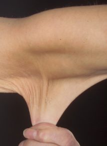

Información divulgativa. No sustituye la valoración de un profesional sanitario ni el consejo genético.
En pocas palabras
| Qué son | Enfermedades hereditarias del tejido conectivo, sobre todo del colágeno |
| Tipos | 13 según la clasificación internacional de 2017 |
| Más frecuente | El tipo hiperlaxo, sin gen conocido |
| Más grave | El tipo vascular, por variantes en COL3A1 |
| Herencia | Casi siempre autosómica dominante; algunos tipos raros, recesivos |


El colágeno, el andamio del cuerpo
El colágeno es la proteína más abundante del cuerpo. Forma fibras que dan resistencia a la piel, los ligamentos, los tendones, los vasos sanguíneos y los órganos. En los síndromes de Ehlers-Danlos, por cambios en los genes del colágeno o de las enzimas que lo procesan, ese andamio es más débil o más elástico de lo normal. Llevan el nombre del dermatólogo danés Edvard Ehlers y del francés Henri-Alexandre Danlos, que los describieron a principios del siglo XX.
Los rasgos comunes
- Hiperlaxitud articular: las articulaciones se doblan más de lo normal. Se mide con la escala de Beighton, de 0 a 9 puntos.
- Luxaciones y subluxaciones frecuentes, esguinces y dolor articular.
- Piel suave, aterciopelada, que se estira mucho y es frágil, con heridas que cicatrizan mal y moratones fáciles.
- Dolor crónico y fatiga, a menudo lo que más afecta a la calidad de vida.
Los tipos principales
| Tipo | Genes | Rasgos |
|---|---|---|
| Hiperlaxo | Desconocido | El más común. Hiperlaxitud generalizada, dolor, luxaciones; piel poco afectada |
| Clásico | COL5A1, COL5A2 | Piel muy elástica y frágil, cicatrices anchas y finas |
| Vascular | COL3A1 | Piel fina y translúcida, moratones; riesgo de rotura de arterias, intestino o útero |
| Cifoescoliótico, artrocalasia, dermatosparaxis y otros | Varios | Muy raros |
El tipo vascular es el más peligroso: puede causar roturas de arterias o del intestino de forma inesperada, a menudo entre los 20 y los 40 años, y el embarazo conlleva riesgo. Por eso es tan importante distinguirlo. Un fármaco para la tensión arterial, el celiprolol, parece reducir las complicaciones. Las personas afectadas deben llevar información de su diagnóstico para casos de urgencia.
El tipo hiperlaxo, un reto diagnóstico
Es con diferencia el más frecuente, pero no tiene una prueba genética: se diagnostica con criterios clínicos establecidos en 2017, que piden hiperlaxitud generalizada, otros rasgos del tejido conectivo y descartar otras causas. Se solapa con el trastorno del espectro de hipermovilidad, y muchas personas tardan años en ser diagnosticadas. Se asocia con frecuencia a mareos al ponerse de pie, problemas digestivos y ansiedad, aunque la relación aún se estudia.
Diagnóstico y tratamiento
- Para los tipos con gen conocido, un panel genético confirma el diagnóstico. Conviene hacerlo siempre que haya sospecha del tipo vascular.
- No hay tratamiento curativo. Se recomienda fisioterapia para fortalecer los músculos que estabilizan las articulaciones, ejercicio adaptado, control del dolor y apoyo psicológico.
- Proteger la piel, avisar antes de cirugías y, en el tipo vascular, seguimiento de las arterias.
Qué preguntar en consulta
Preguntas que puedes llevar apuntadas. No todas tendrán respuesta el primer día, y tu equipo puede añadir otras.
- ¿Qué tipo de Ehlers-Danlos tengo y se ha confirmado con un estudio genético?
- Si es el tipo vascular, ¿qué controles de las arterias necesito?
- ¿Qué ejercicio y qué fisioterapia me ayudan a proteger las articulaciones?
- ¿Qué hago con el dolor crónico y el cansancio?
- ¿Qué precauciones conviene tomar en un embarazo o una cirugía?
Dónde informarse
- Asociación Nacional de Síndromes de Ehlers-Danlos e Hiperlaxitud (ANSEDH)
- The Ehlers-Danlos Society (en inglés)
- Orphanet: síndrome de Ehlers-Danlos
Ver también: Síndrome de Marfan, Patrones de herencia y De gen a proteína.
Fuentes
- Malfait F, Francomano C, Byers P, et al. The 2017 international classification of the Ehlers-Danlos syndromes. Am J Med Genet C Semin Med Genet. 2017;175(1):8-26. doi:10.1002/ajmg.c.31552
- Byers PH, Belmont J, Black J, et al. Diagnosis, natural history, and management in vascular Ehlers-Danlos syndrome. Am J Med Genet C Semin Med Genet. 2017;175(1):40-47. doi:10.1002/ajmg.c.31553
- Ong KT, Perdu J, De Backer J, et al. Effect of celiprolol on prevention of cardiovascular events in vascular Ehlers-Danlos syndrome: a prospective randomised, open, blinded-endpoints trial. Lancet. 2010;376(9751):1476-1484. doi:10.1016/S0140-6736(10)60960-9